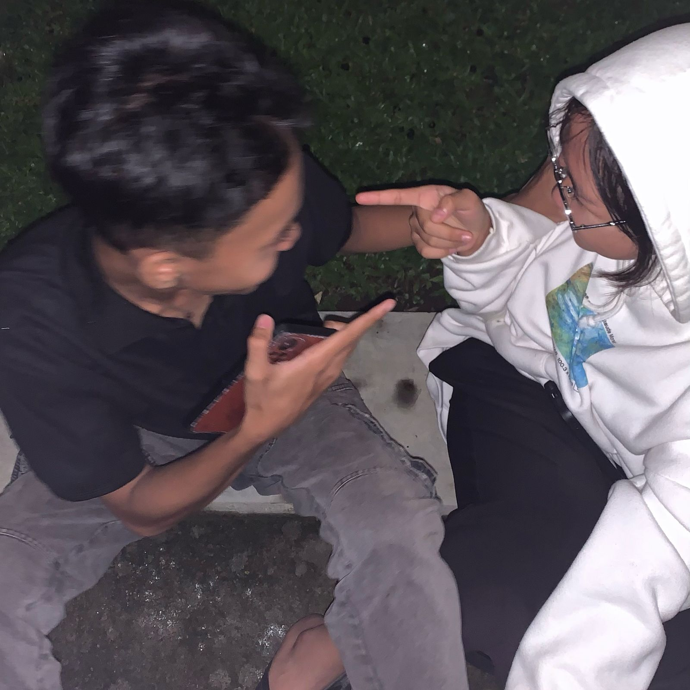
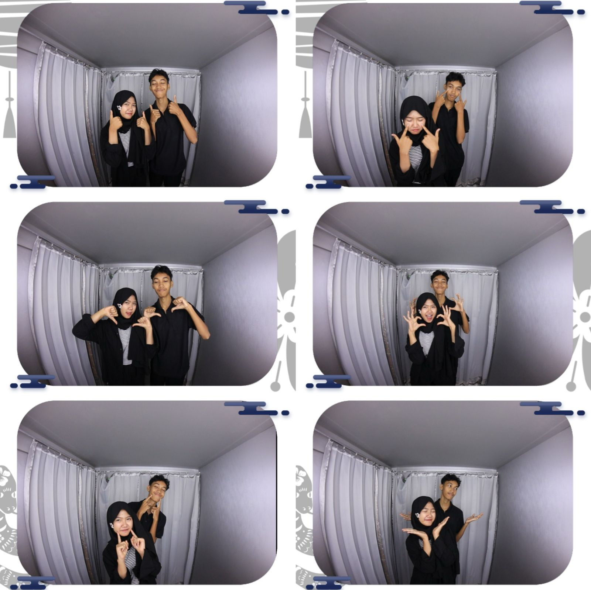

29 NOVEMBER 2024
Awal-awal kita deket, aku beneran gak nyangka kalau kamu bakal jadi pacarku. Kayaknya ini kamu tiba-tiba nyulik aku ya? Untung aku ikut, kalau enggak gabakal ketemu tuh jam nya. Awalnya, aku cuma nganggep kamu sebagai Masku, tempat aku bisa cerita, tempat yang bisa aku percaya tanpa ragu. Tapi makin lama, makin sadar… damn, I’m falling in love
5 DECEMBER 2024
Aku ga expect kalo bakal secepet itu?!! HAHAHAHA. Rasanya saltingggg bangettt, KEK JDHFUIEFBSJHFG. btw cupu bangett dihhh, ga berani ngomong langsung wuuu
14 DECEMBER 2024
our first beachh date yayy, jujur ini kadang masih kerasa canggungnya
21 DECEMBER 2024
our first art gallery datee, ini seruuu bngtt. mau art gallery date lagiii
23 DECEMBER 2024
our first late nite talk, bisa dibilang deep talk sihh. lucu banget :D
31 DECEMBER 2024
new year datee yayy, 10000/10. seruu banget. jadi keinget aku mintol mas mas antriin minum T__T
12 JANUARY 2025
micucuee dateee yayyyy, btw enakan pilihanmu minumnyaa. di hari ini jujur aku kesel bngt sama kamu yaa :(
24 JANUARY 2025
ini kitaa mau hunting kadoo azqi HAHAHHA, lucu bangettt kamu juga ikut ngerayaainnn. makasihhh ya sayanggg
26 JANUARY 2025
YAYY, ini kamu ikutin bm ku maww beli esklim matchaaa. terus abiss ni kita muter muter amplazz. seru bangetttt
✨ Our Moments ✨
I hope that every time you're tired of our relationship, you remember that we've been this happy together before.
🌟 our fav datee, YASHH RIGHTT. INFORMA DATEE, berasa besok nya nikahhh gitu. pilih pilih furnituree wkwk (aamiin). how informa speak to us "lu lagi. lu lagi". aku siap mengelilingi seluruh toko furniture jogjaa
🌟 ini pas aku cakit :( terus kamu kerumahhh bawain esklim ama jajannn, wuffyuuuuu massss.lope lope sekebon
🌟 andd ofc, our fav things is art gallery date.
🌟 my first fresh flower, dari cowokk HAHAHA, karna biasanyaa yg ngasih bundaaa. taugasi ini aku balik balik ke kelas sejarah sambil senyum senyum kaya org gilaaa taugakkkkk. SALTING BRUTALLL
💖 DBL DATE ANJAY (ceritanyaa), ini next antara dbl beneran atau aku nonton kamu sparingg yaa??? HAHAHHA
💖 AKUU SUKAA BANGET MUTER MUTER MALL SAMA KAMUUU, APALAGI DI PLAY GROUND DEWASA ITUU (aku lupa namaanya). kalau kamu lagi capek sama aku, sama hubungan kita, atau bahkan kalau kamu lagi boseenn sama aku, inget yaa kamu pernah sebahagia iniii pas sama aku
💖 paintingg datee yayyy, gambaranku sih jelas lebih bagus daripada kamu. padahal kan yg ngewarisin darah seniman mah kamu yakkk, wuuu gimana cii
💌 Another Beautiful Moment 💌
27 MARCH 2025
FINALLYY!!!, Setelah sekian lama ga ngedateee yayyy

